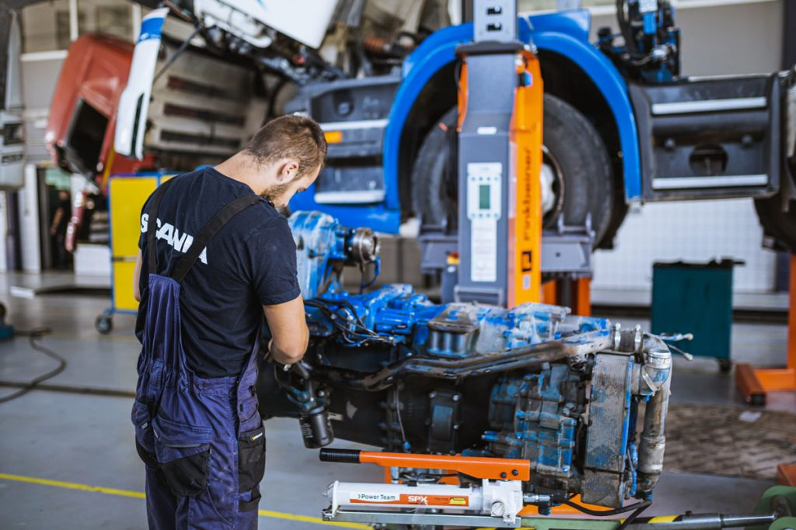
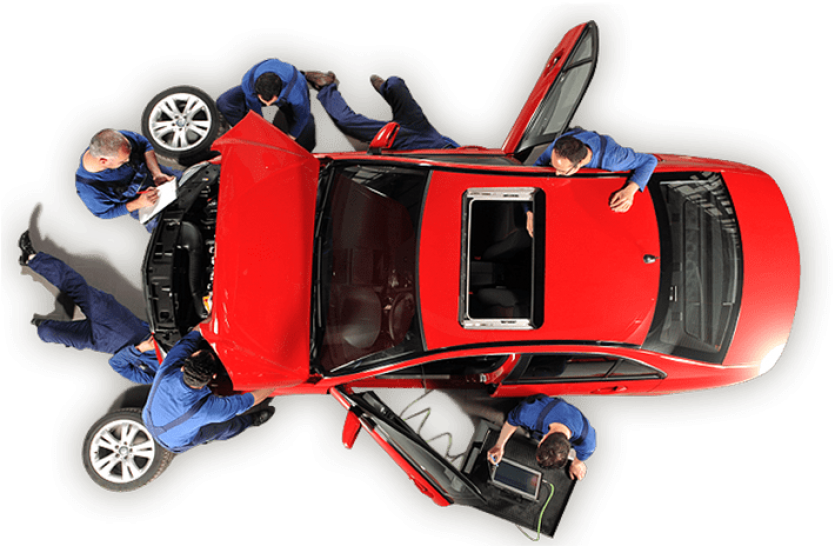

Servis automobila
Objavljeno: 22.02.2025.
Servis automobila ključan je za dugotrajan i siguran rad vozila jer omogućuje pravovremeno otkrivanje i otklanjanje kvarova. Redovito održavanje smanjuje rizik od iznenadnih problema i produžuje vijek trajanja motora i ostalih mehaničkih komponenti.
Osnovni servis automobila obično uključuje zamjenu motornog ulja, filtera ulja, zraka i goriva te provjeru razine svih tekućina. Korištenje kvalitetnih dijelova i pravilnih specifikacija proizvođača ključno je za optimalne performanse vozila.
Veliki servis obuhvaća složenije zahvate poput zamjene zupčastog remena, vodene pumpe, svjećica i provjere sustava hlađenja. Pravovremeni veliki servis sprječava ozbiljne kvarove koji mogu dovesti do skupih popravaka.
Dijagnostika vozila postala je neizostavan dio modernog servisa automobila. Pomoću računalnih sustava serviseri mogu brzo identificirati greške u elektronici, motoru i sigurnosnim sustavima, čime se štedi vrijeme i novac vlasnika.
Redoviti servis ne osigurava samo tehničku ispravnost, već i veću sigurnost u vožnji. Ispravno održavano vozilo ima bolju potrošnju goriva, pouzdanije kočnice i manji utjecaj na okoliš, što ga čini sigurnijim za vozača i ostale sudionike u prometu.
Galerija

